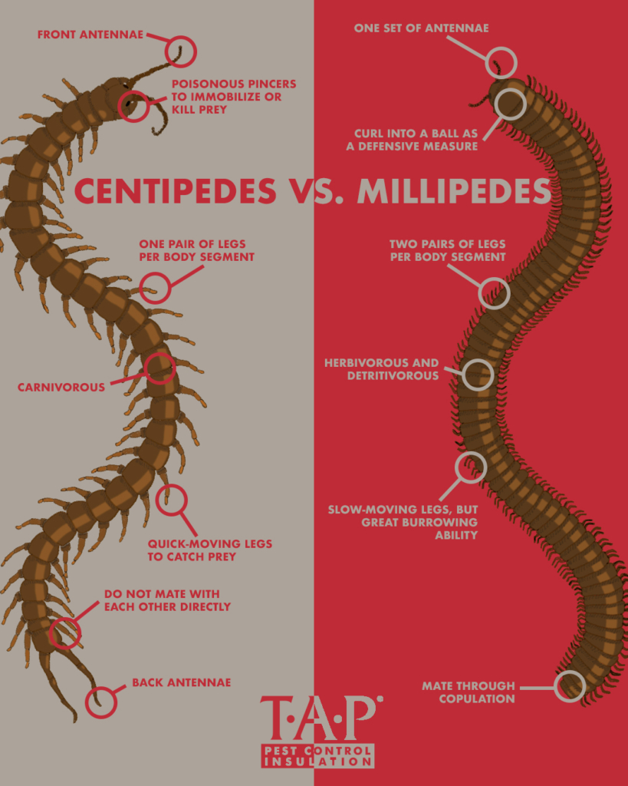

Differences
Centipedes and Millipedes, both always mistaken but are quite the opposite of one another.

Behavior-
Centipede
Movement
- A centipede moves quick and agile
- They have the abillity to climb walls and ceilings
- They also are able to squeeze themself in tiny spaces and through narrow spaces too by their flat bodies
Diet
- Centipees are known for their vicious behavoir and eating with their fangs
- They are carnivorous and know to many animals from spiders,roaches, moth, crickets,many worms, other centipede and a lot more insects. Even rats and bigger animals.
Millipede
Movement
- Millipede move in a slow place but their many lags create a ripple like wave from the head all the way to the tail.
Diet
- they are detritivores meaning they eat dead leaves and plants.
- They can eat fungi, suck plants fulids but they also eat a few predators (like earthworms, snails and other insect) but they usually perfer decaying plants
Back